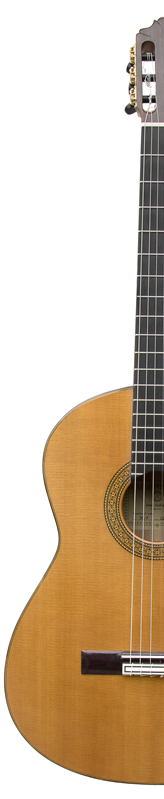

La información que aqui encontrarás, es información relacionada con la música de todo tipo, no en un sentido teórico ni práctico, mas bien, encontrarás los temas o melodías que, en lo particular, me gustan, por lo tanto, encontraremos diferentes ritmos y mas...
